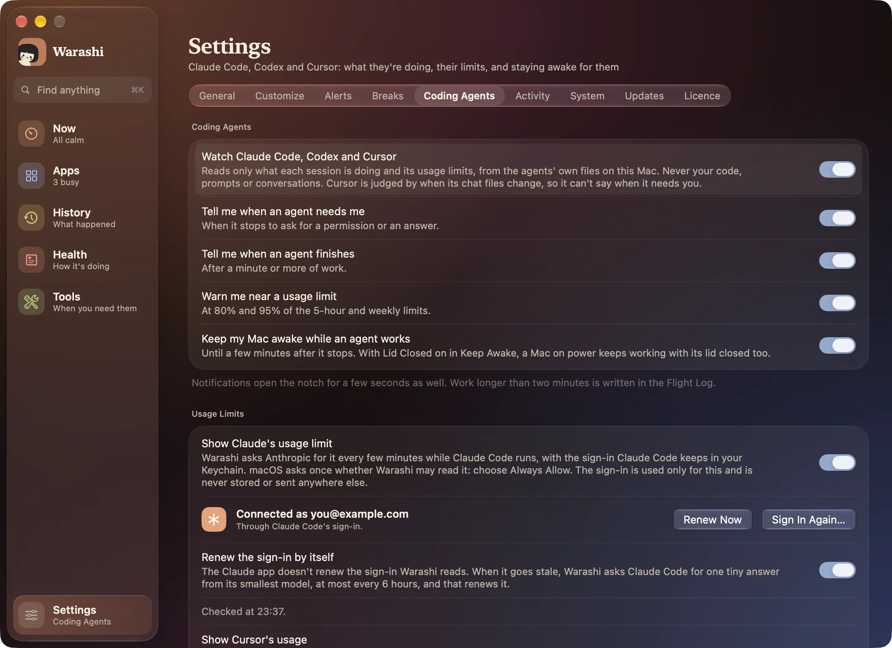

Se você trabalha com Claude Code, Codex ou Cursor, o Warashi pode acompanhá-los por você: o que cada sessão está fazendo, quão perto cada um está do limite de uso e quando um precisa de você. Fica desativado até você ativar.
- Ative
Abra Ajustes › Agentes de código e ative Acompanhar Claude Code, Codex e Cursor, ou pressione Ativar… no cartão Agentes de código no topo de Apps › Desenvolvedor. O Warashi pergunta uma vez se pode enviar notificações.


- Escolha o que quer saber
Avisar quando um agente precisar de mim (ele parou para pedir uma permissão ou uma resposta), Avisar quando um agente terminar (depois de um minuto ou mais de trabalho) e Avisar perto de um limite (em 80% e 95%). Cada aviso chega como notificação e abre o entalhe por alguns segundos. Clique na notificação para ver seus agentes.
- Veja-os trabalhando
O cartão Agentes de código em Apps › Desenvolvedor mostra cada sessão: trabalhando, precisa de você ou concluída, em qual projeto. Enquanto um trabalha, o entalhe mostra há quanto tempo, no lugar das duas leituras. Adicione Agentes de código à janela da barra de menus em Ajustes › Personalizar para ver os limites ali também, ou escolha Limite do agente de código ao lado do espírito na barra de menus.


Limites de uso
Cada limite é um anel: o limite de 5 horas e o semanal, com a hora em que volta. O anel fica âmbar a partir de 80% e vermelho a partir de 95%.
- O Codex escreve os limites nos próprios arquivos no seu Mac, então eles aparecem depois da próxima resposta do Codex.
- O Cursor mostra o uso mensal. Ative Mostrar o uso do Cursor; o Warashi consulta o Cursor com o login que o agente de linha de comando do Cursor guarda nas suas Chaves, então entre uma vez com
cursor-agent login. Se o macOS perguntar, escolha Sempre permitir. - O Claude Code não guarda o limite no seu Mac. Ative Mostrar o limite de uso do Claude e o Warashi o pede à Anthropic a cada poucos minutos enquanto o Claude Code roda, com o login do Claude Code nas suas Chaves. O macOS pergunta uma vez, quando você ativa, se o Warashi pode lê-lo: escolha Sempre Permitir. O Warashi nunca pergunta por conta própria: se o macOS precisar da sua permissão depois, os Ajustes avisam, com um botão Permitir…. O login é usado só para esse pedido; nunca é guardado, alterado nem enviado para outro lugar.
Entrando no Claude
Abaixo de Mostrar o limite de uso do Claude, os Ajustes mostram com quem o Claude Code está conectado. Não está conectado? Entrar… abre o login do próprio Claude Code no Terminal, que leva você ao navegador. O Claude Code só renova o login enquanto você o usa, então, depois de um dia parado, o limite pode parar de atualizar: com Renovar o login sozinho ativado, o Warashi pede ao Claude Code uma resposta bem pequena do menor modelo dele, no máximo a cada seis horas, e o Claude Code renova o login. Renovar Agora faz isso na hora. O Warashi nunca renova nem grava um login por conta própria.
Fique ativo enquanto eles trabalham
Ative Manter meu Mac ativo enquanto um agente trabalha em Ajustes › Agentes de código, ou Automaticamente › Enquanto um agente de código trabalha em Manter ativo. Seu Mac fica ativo enquanto um agente trabalha ou espera por você, e por três minutos depois. Com Manter ativo com a tampa fechada ativado, um MacBook no carregador continua trabalhando com a tampa fechada.
No Diário de bordo
Trabalhos de mais de dois minutos são registrados no Diário de bordo: "Claude Code trabalhou por 1 h 12 min, em shop".
Se algo não estiver certo
- O limite do Claude diz que o login venceu: abra o Claude Code uma vez no terminal e ele renova o login. O Claude Code dentro do app Claude para desktop guarda o login em outro lugar.
- O limite do Codex não aparece: ele surge depois da próxima resposta do Codex, a partir das sessões da última semana.
- O Cursor nunca avisa que precisa de você: ele não registra isso em nenhum lugar que o Warashi possa ler, então só aparecem "trabalhando" e "concluído", cerca de um minuto depois que ele para.
- Outros agentes: Gemini CLI, Aider e outros mostram CPU e memória em Desenvolvedor, sem estado de trabalhando ou esperando.
Mais em Solução de problemas, ou escreva para adam@warashi.app.